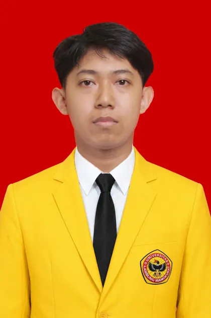
Maskuari
Frontend Developer, Canva Designer, dan mahasiswa Pendidikan Komputer.
Student of Computer Education
Mahasiswa Pendidikan Komputer yang suka membangun web, desain visual, dokumentasi, dan aplikasi pembelajaran digital yang terasa modern, rapi, dan tetap punya energi.
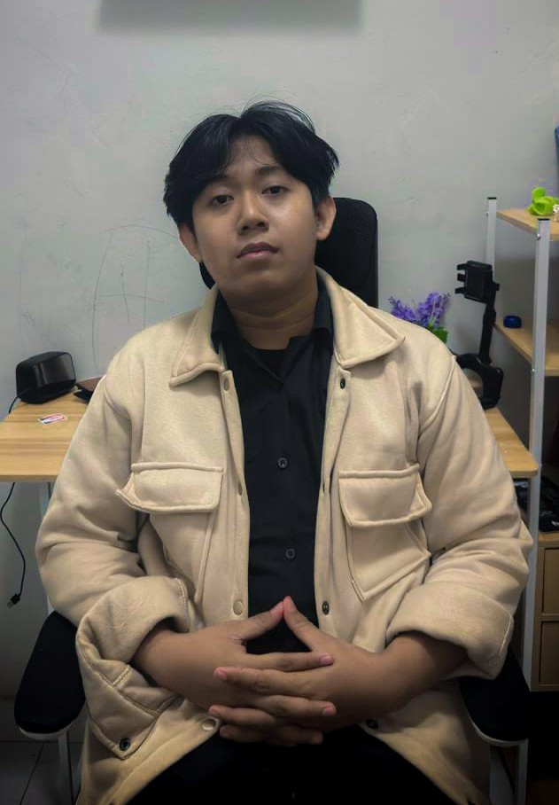
maskuari.dev --frontend --creative
Biodata

Frontend Developer, Canva Designer, dan mahasiswa Pendidikan Komputer.
Pendidikan
Program Studi Pendidikan Komputer. Fokus pada teknologi pendidikan, algoritma, web, dan pengembangan perangkat lunak pembelajaran.
Jurusan Teknik Komputer dan Jaringan. Belajar jaringan, hardware, instalasi sistem operasi, administrasi server, dan praktik teknis komputer.
Mulai aktif berorganisasi, mengeksplorasi minat seni, teknologi informasi dasar, dan kegiatan sekolah.
Fondasi pendidikan dasar, disiplin belajar, dan pembentukan karakter akademik sejak awal.
Project Showcase
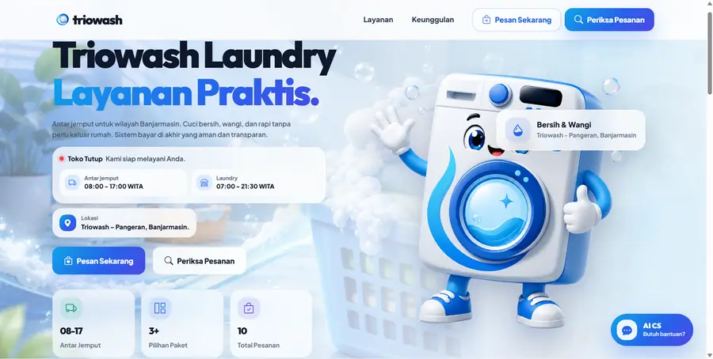
Website layanan laundry dengan visual hero, CTA, dan tampilan pemesanan.
Buka Project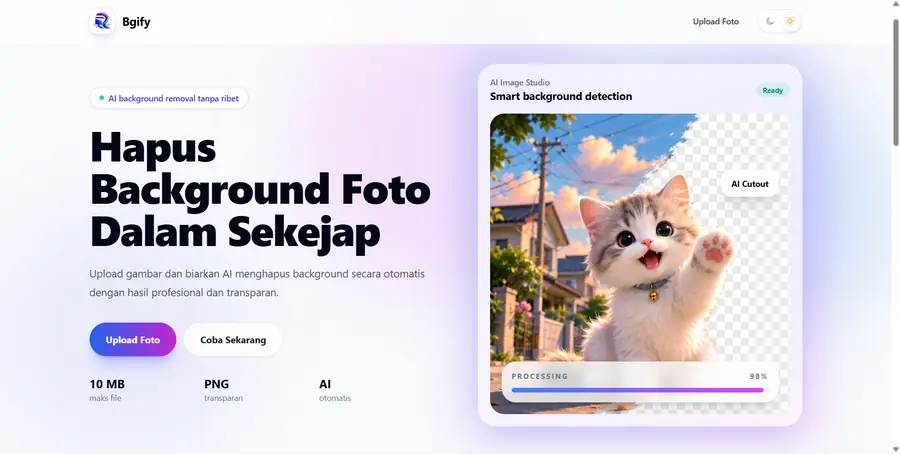
Tool AI untuk upload foto dan hapus background secara cepat.
Buka Project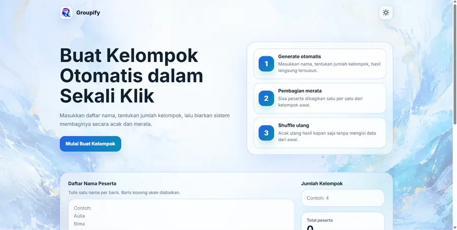
Generator kelompok otomatis, random, dan rata untuk daftar peserta.
Buka Project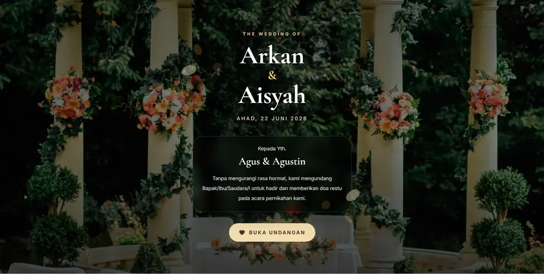
Template undangan wedding bernuansa elegan dengan hero foto dan tombol buka undangan.
Buka Project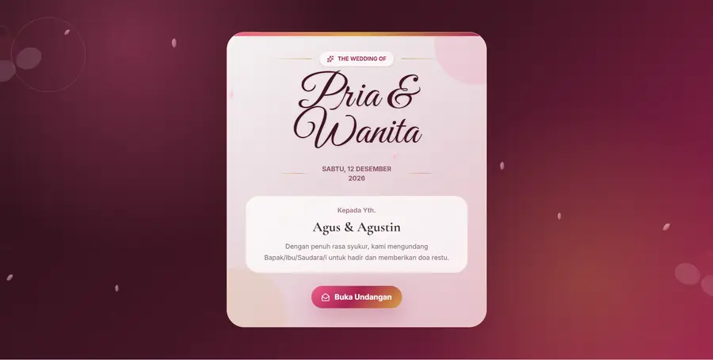
Template undangan wedding bernuansa pink yang lembut, modern, dan cocok untuk landing undangan.
Buka ProjectAplikasi belajar algoritma dengan materi, latihan, quiz, leaderboard, profil, detail materi, dan tampilan pembelajaran yang ceria.
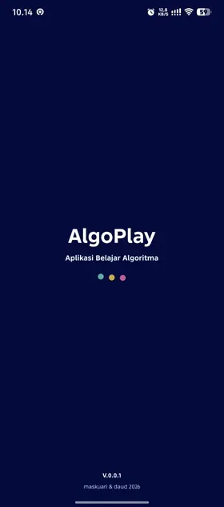
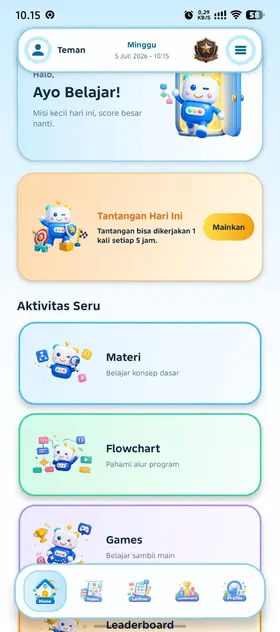
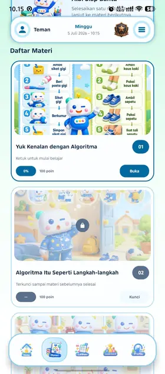
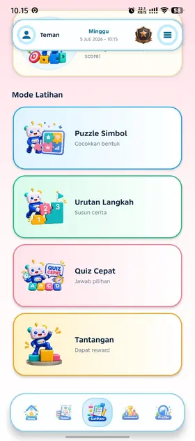
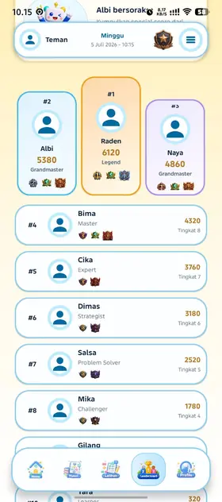
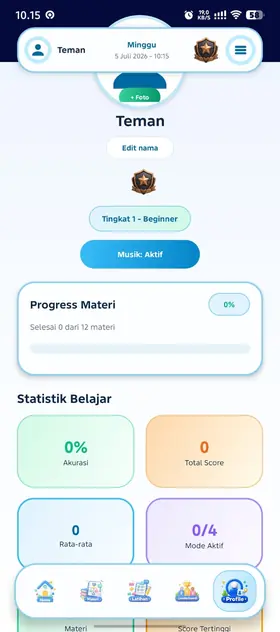
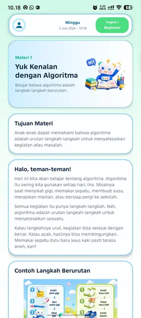
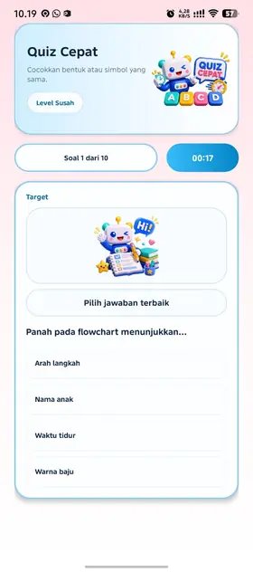
Pengalaman
Terlibat dalam pelaksanaan kegiatan kepemimpinan mahasiswa Pendidikan Komputer.
Mengelola publikasi, media sosial, dan arus informasi organisasi.
Publikasi, dekorasi, dan dokumentasi acara silaturahmi tahunan mahasiswa Pendidikan Komputer.
Mendesain aset visual dan mendokumentasikan rangkaian Pemilihan Raya HIMPIKOM.
Koordinator publikasi, dekorasi, dan dokumentasi forum musyawarah anggota.
Mengatur teknis lapangan agar rangkaian acara berjalan tertib dan lancar.
Menangani administrasi, pendataan peserta, dan dokumentasi kegiatan kolaborasi.
Mengkoordinir kebutuhan akademik dan kegiatan internal angkatan.
Administrasi, pengolahan data, dan alur kerja bidang Sumber Daya Air.
Perbaikan PC/laptop, instalasi software, stok komponen, dan pelayanan pelanggan.
Memimpin organisasi kesiswaan, merancang program kerja, dan berkoordinasi dengan sekolah.
Skill
Prestasi
Contact
Kirim email atau cek sosial media dan repository project.
Detail